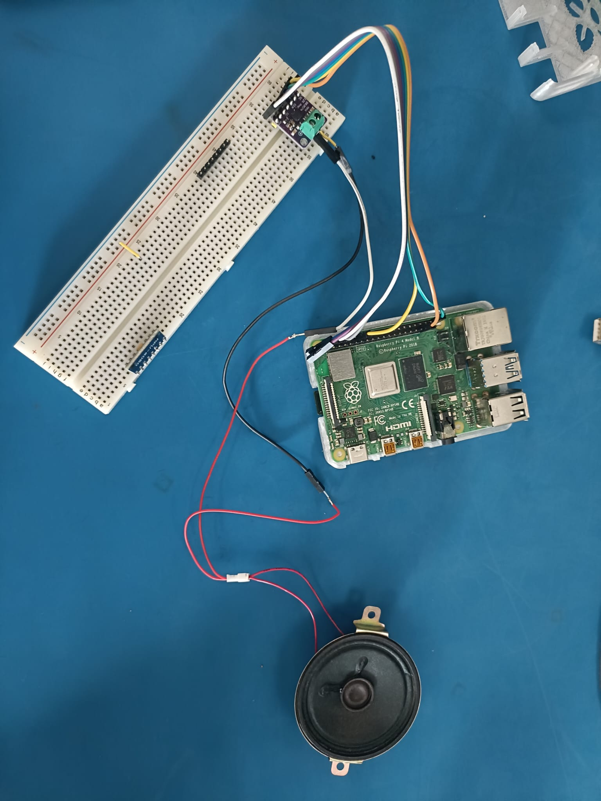

Objective
Following the unsuccessful attempts on the Raspberry Pi 5 due to the operating system compatibility issues, I continued development on the project Raspberry Pi 4. The objective was to configure the MAX98357A I²S amplifier, verify communication with the Raspberry Pi, and prepare the floor announcement audio system for integration into the elevator FSM.
Hardware Setup
The MAX98357A I²S amplifier was connected to the Raspberry Pi 4 using the dedicated I²S interface. This configuration will eventually allow the Supervisory Controller to play floor announcements whenever the elevator reaches its destination floor.
- BCLK → GPIO18 (Pin 12)
- LRC → GPIO19 (Pin 35)
- DIN → GPIO21 (Pin 40)
- VIN → 5 V (Pin 2)
- GND → Pin 6

Firmware Configuration
The Raspberry Pi firmware configuration file
(/boot/firmware/config.txt) was modified to disable the
default onboard audio interface and enable the MAX98357A overlay.
Changes Made
- Commented out the onboard audio driver.
- Modified the VC4 graphics overlay to disable HDMI audio.
- Enabled the Raspberry Pi I²S peripheral.
- Loaded the MAX98357A device tree overlay.
# dtparam=audio=on
dtoverlay=vc4-kms-v3d,noaudio
dtparam=i2s=on
dtoverlay=max98357a,no-sdmode
# For more options and information see
# http://rptl.io/configtxt
# Some settings may impact device functionality. See link above for details
# Uncomment some or all of these to enable the optional hardware interfaces
dtparam=i2c_arm=on
#dtparam=i2s=on
dtparam=spi=on
# Enable audio (loads snd_bcm2835)
# dtparam=audio=on
# Additional overlays and parameters are documented
# /boot/firmware/overlays/README
# Automatically load overlays for detected cameras
camera_auto_detect=1
# Automatically load overlays for detected DSI displays
display_auto_detect=1
# Automatically load initramfs files, if found
auto_initramfs=1
# Enable DRM VC4 V3D driver
dtoverlay=vc4-kms-v3d,noaudio
max_framebuffers=2
# Don't have the firmware create an initial video= setting in cmdline.txt.
# Use the kernel's default instead.
disable_fw_kms_setup=1
# Run in 64-bit mode
arm_64bit=1
# Disable compensation for displays with overscan
disable_overscan=1
# Run as fast as firmware / board allows
arm_boost=1
[cm4]
# Enable host mode on the 2711 built-in XHCI USB controller.
# This line should be removed if the legacy DWC2 controller is required
# (e.g. for USB device mode) or if USB support is not required.
otg_mode=1
[cm5]
dtoverlay=dwc2,dr_mode=host
[all]
enable_uart=1
dtparam=i2s=on
dtoverlay=max98357a,no-sdmode
Hardware Detection
After rebooting the Raspberry Pi, the MAX98357A was successfully detected by ALSA.
aplay -l
card 3: MAX98357A [MAX98357A], device 0:
bcm2835-i2s-HiFi HiFi-0
This confirmed that the device tree overlay loaded correctly and that the Raspberry Pi recognized the amplifier hardware.
Speaker Testing
Next Software Integration
Results